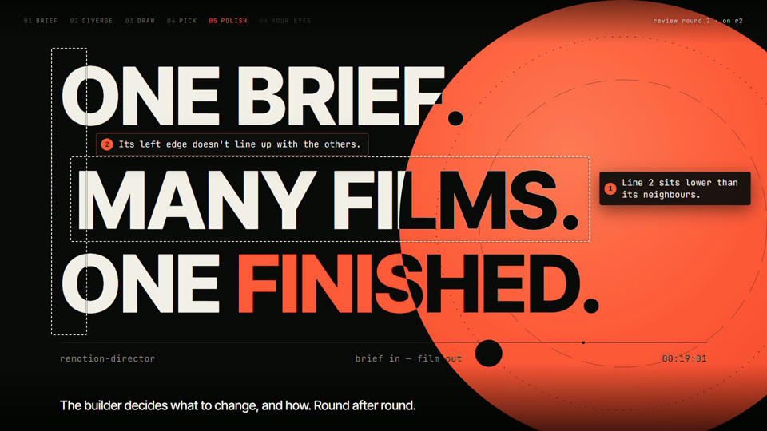
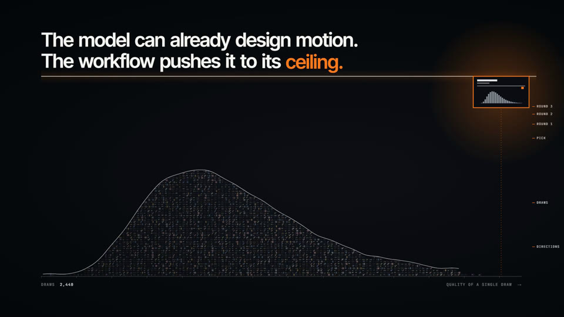
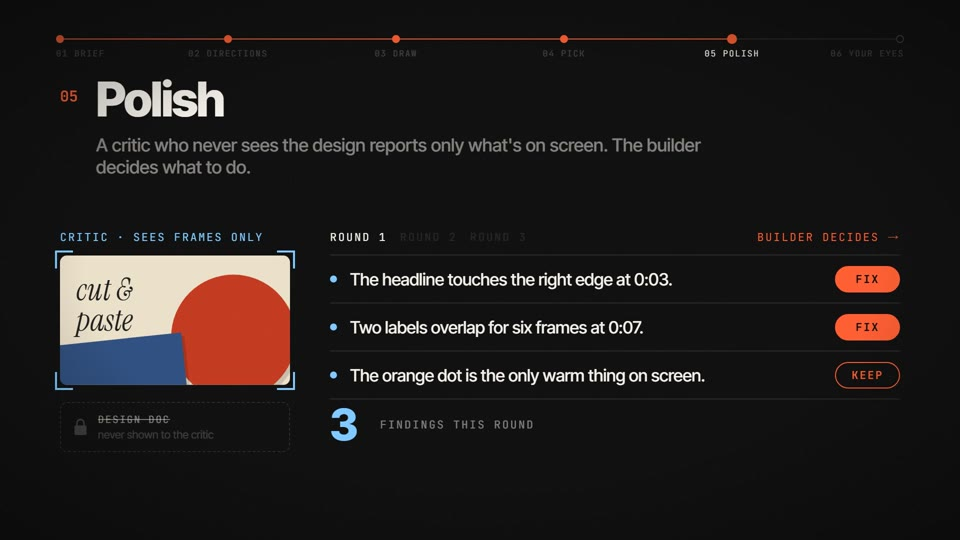

同一个模型（Opus 5.5）、同一条 hero brief：装插件对比空白对照。插件做的主 hero 质量 4、成熟度 5；空白对照是 3、5。
633594e
自检定稿 4/4，亲自打磨 1 轮后 4/5。45 秒。

没经过你的任何打磨，只有挑选加自检。46 秒。

没收到任何反馈。58.5 秒。
两边都是干净的无头 Claude Code 会话，看不到 CLAUDE.md、记忆和 MCP。插件那边各 agent 的上下文全由插件自己管理，我只在你和编排者之间原样转话。
| 本地时间 | 发生了什么 |
|---|---|
| 23:29–23:40 | 编排者读 create 技能，问委托的 9 项；你答：时长交给设计师、给了 slogan、片内用英语、3 抽、亲自打磨。 |
| 23:42–00:02 | 方向生成器列出 3 个方向，3 个乙并行设计、施工，预览依次渲好，匿名编号成 A/B/C。 |
| 23:52–00:06 | 裸跑开跑、交付；你打分 3/5。 |
| 00:19 | 你："AC 我都想要"，并对 C 提了一条意见。编排者照办：两支都继续，第三支结束。 |
| 00:22–00:27 | C、A 自检定稿；C 打磨第 1 轮交回：盲评选中的那一格重新设计成了四格里最强的。 |
| 00:40 | 你说 "go"，两支定稿。 |
后两条都出在"挑选时就提了意见"这个情形上，现在的 Step 4b 没写到。